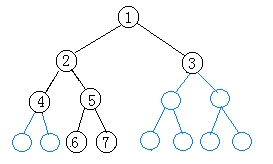
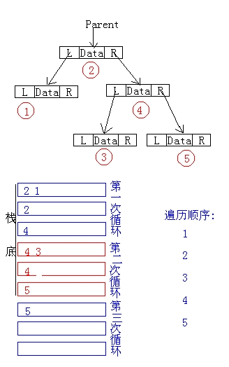

第二十四课
本课主题： 遍历二叉树
教学目的： 掌握二叉树遍历的三种方法
教学重点： 二叉树的遍历算法
教学难点： 中序与后序遍历的非递归算法
授课内容：
一、复习二叉树的定义
二叉树由三个基本单元组成：根结点、左子树、右子树
问题：如何不重复地访问二叉树中每一个结点？
二、遍历二叉树的三种方法：
1 访问根结点 2 先序访问左子树 3 先序访问右子树 1 中序访问左子树 2 中序访问根结点 3 中序访问右子树 1 后序访问左子树 2 后序访问右子树 3 访问根结点
三、递归法遍历二叉树
先序：
Status(PreOrderTraverse(BiTree T,Status(*Visit)(TElemType e)){
if(T){
if(Visit(T->data))
if(PreOrderTraverse(t->lchild,Visit))
if(PreOrderTraverse(T->rchild,Visit)) return OK;
return ERROR;
}else return OK;
}

遍历结果：1,2,4,5,6,7,3
四、非递归法遍历二叉树

中序一：
Status InorderTraverse(BiTree T,Status(*Visit)(TElemType e)){
InitStack(S);Push(S,T);
while(!StackEmpty(S)){
while(GetTop(S,p)&&p)Push(S,p->lchild);
Pop(S,p);
if(!StackEmpty(S)){
Pop(S,p); if(!Visit(p->data)) return ERROR;
Push(S,p->rchild);
}
}
return OK;
}
中序二：
Status InorderTraverse(BiTree T,Status(*Visit)(TElemType e)){
InitStack(S);p=T;
while(p||!StackEmpty(S)){
if(p){Push(S,p);p=p->lchild;}
else{
Pop(S,p); if(!Visit(p->data)) return ERROR;
p=p->rchild);
}//else
}//while
return OK;
}
五、总结
二叉树遍历的意义